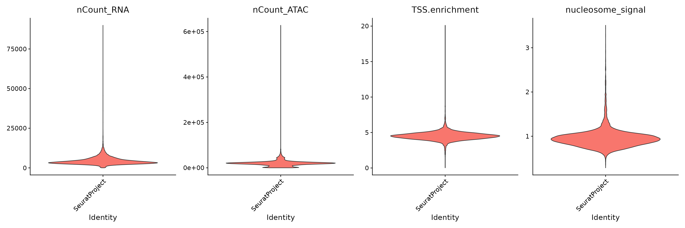
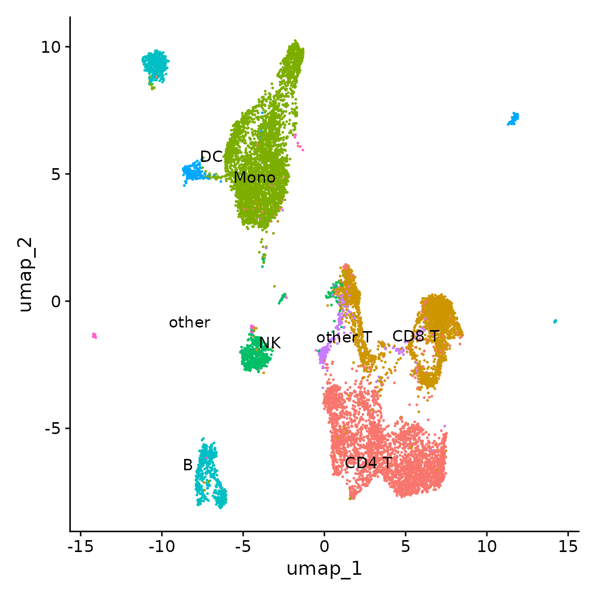
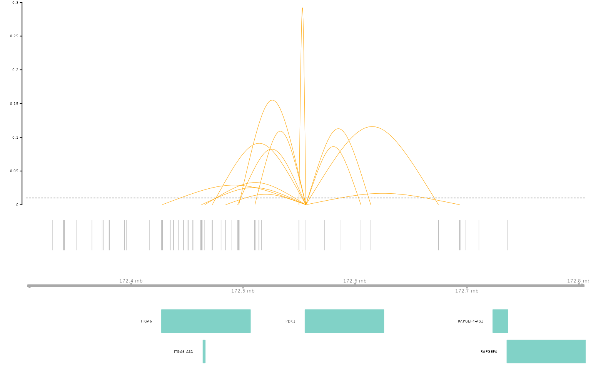
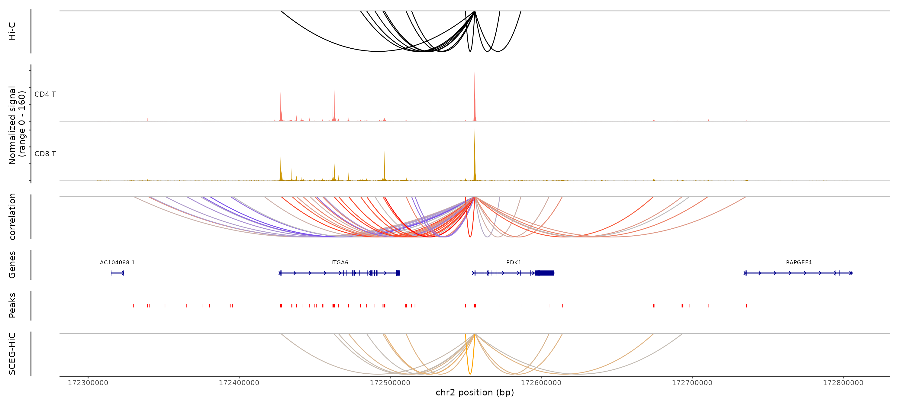

SCEG-HiC on paired scRNA-seq and scATAC-seq data of PBMC-aggregate
XuanLiang
Compiled: February 25, 2025
Source:vignettes/pbmc_multiomic_aggregate.Rmd
pbmc_multiomic_aggregate.RmdIn this vignette,we’ll demonstrate SCEG-HiC’s capability of inferring gene-enhancer by applying it to paired scRNA-seq and scATAC-seq data. In this vignette we’ll be using a publicly available 10x Genomic Multiome dataset for human PBMCs,and aggregating the data for processing.
The implementent of SCEG-HiC is seamlessly compatible with the workflow of Seurat/Signac package, SCEG-HiC pipeline consists of the following three major parts:
- Set up a Seurat object.
- Infer gene-enhancer using SCEG-HiC by taking as input a Seurat object and the bulk average Hi-C.
- Visualize the gene-enhancer.
View data download code
You can download the required data by running the following lines in a shell:
wget https://cf.10xgenomics.com/samples/cell-arc/1.0.0/pbmc_granulocyte_sorted_10k/pbmc_granulocyte_sorted_10k_filtered_feature_bc_matrix.h5
wget https://cf.10xgenomics.com/samples/cell-arc/1.0.0/pbmc_granulocyte_sorted_10k/pbmc_granulocyte_sorted_10k_atac_fragments.tsv.gz
wget https://cf.10xgenomics.com/samples/cell-arc/1.0.0/pbmc_granulocyte_sorted_10k/pbmc_granulocyte_sorted_10k_atac_fragments.tsv.gz.tbiSet up a Seurat object
To facilitate easy exploration, pbmc_multiomic.rds also
available from 10.5281/zenodo.14849886.
# load the RNA and ATAC data
counts <- Read10X_h5("pbmc_granulocyte_sorted_10k_filtered_feature_bc_matrix.h5")
fragpath <- "pbmc_granulocyte_sorted_10k_atac_fragments.tsv.gz"
# get gene annotations for hg38
annotation <- GetGRangesFromEnsDb(ensdb = EnsDb.Hsapiens.v86)
seqlevels(annotation) <- paste0("chr", seqlevels(annotation))
# create a Seurat object containing the RNA data
pbmc <- CreateSeuratObject(
counts = counts$`Gene Expression`,
assay = "RNA"
)
# create ATAC assay and add it to the object
pbmc[["ATAC"]] <- CreateChromatinAssay(
counts = counts$Peaks,
sep = c(":", "-"),
fragments = fragpath,
annotation = annotation
)
pbmc## An object of class Seurat
## 144978 features across 11909 samples within 2 assays
## Active assay: RNA (36601 features, 0 variable features)
## 1 layer present: counts
## 1 other assay present: ATAC
# Quality control
DefaultAssay(pbmc) <- "ATAC"
pbmc <- NucleosomeSignal(pbmc)
pbmc <- TSSEnrichment(pbmc)
VlnPlot(
object = pbmc,
features = c("nCount_RNA", "nCount_ATAC", "TSS.enrichment", "nucleosome_signal"),
ncol = 4,
pt.size = 0
)
# filter out low quality cells
pbmc <- subset(
x = pbmc,
subset = nCount_ATAC < 100000 &
nCount_RNA < 25000 &
nCount_ATAC > 1800 &
nCount_RNA > 1000 &
nucleosome_signal < 2 &
TSS.enrichment > 1
)
pbmc## An object of class Seurat
## 144978 features across 11070 samples within 2 assays
## Active assay: ATAC (108377 features, 0 variable features)
## 2 layers present: counts, data
## 1 other assay present: RNA
# call peaks using MACS2
peaks <- CallPeaks(pbmc)
# remove peaks on nonstandard chromosomes and in genomic blacklist regions
peaks <- keepStandardChromosomes(peaks, pruning.mode = "coarse")
peaks <- subsetByOverlaps(x = peaks, ranges = blacklist_hg38_unified, invert = TRUE)
# quantify counts in each peak
macs2_counts <- FeatureMatrix(
fragments = Fragments(pbmc),
features = peaks,
cells = colnames(pbmc)
)## Extracting reads overlapping genomic regions
# create a new assay using the MACS2 peak set and add it to the Seurat object
pbmc[["peaks"]] <- CreateChromatinAssay(
counts = macs2_counts,
fragments = fragpath,
annotation = annotation
)## Computing hash
pbmc## An object of class Seurat
## 276342 features across 11070 samples within 3 assays
## Active assay: ATAC (108377 features, 0 variable features)
## 2 layers present: counts, data
## 2 other assays present: RNA, peaksRNA analysis
DefaultAssay(pbmc) <- "RNA"
pbmc <- SCTransform(pbmc)
pbmc <- RunPCA(pbmc)ATAC analysis
DefaultAssay(pbmc) <- "ATAC"
pbmc <- FindTopFeatures(pbmc, min.cutoff = 5)
pbmc <- RunTFIDF(pbmc)
pbmc <- RunSVD(pbmc)Annotating cell types and Intergration analysis
We’ll use an annotated PBMC reference dataset from Hao et al. (2020), available for download here: https://atlas.fredhutch.org/data/nygc/multimodal/pbmc_multimodal.h5seurat.
library(SeuratDisk)
# load PBMC reference
reference <- LoadH5Seurat("pbmc_multimodal.h5seurat", assays = list("SCT" = "counts"), reductions = "spca")
reference <- UpdateSeuratObject(reference)
DefaultAssay(pbmc) <- "SCT"
# transfer cell type labels from reference to query
transfer_anchors <- FindTransferAnchors(
reference = reference,
query = pbmc,
normalization.method = "SCT",
reference.reduction = "spca",
recompute.residuals = FALSE,
dims = 1:50
)
predictions <- TransferData(
anchorset = transfer_anchors,
refdata = reference$celltype.l1,
weight.reduction = pbmc[["pca"]],
dims = 1:50
)
pbmc <- AddMetaData(
object = pbmc,
metadata = predictions
)
# set the cell identities to the cell type predictions
Idents(pbmc) <- "predicted.id"
levels(pbmc) <- c("CD4 T", "CD8 T", "Mono", "NK", "B", "DC", "other T", "other")Using the weighted nearest neighbor methods in Seurat v4, we can compute a joint neighbor graph that represent both the gene expression and DNA accessibility measurements.
# build a joint neighbor graph using both assays
pbmc <- FindMultiModalNeighbors(
object = pbmc,
reduction.list = list("pca", "lsi"),
dims.list = list(1:50, 2:40),
modality.weight.name = "RNA.weight",
verbose = TRUE
)
# build a joint UMAP visualization
pbmc <- RunUMAP(
object = pbmc,
nn.name = "weighted.nn",
assay = "RNA",
verbose = TRUE
)
DimPlot(pbmc, label = TRUE, repel = TRUE, reduction = "umap") + NoLegend()
Infer gene-enhancer using SCEG-HiC
Preprocess data
When preprocessing data with SCEG-HiC, you can choose between clustering or single-cell type analysis. By default, the scATAC-seq counts are binarized.In addition, you can select either paired scRNA-seq and scATAC-seq data or only scATAC-seq data. Here, we have aggregated with paired scRNA-seq and scATAC-seq data.
SCEGdata <- process_data(pbmc, max_overlap = 0.5)## Generating aggregated data## Aggregating cluster CD4 T## Sample cells randomly.## have 73 samples## Aggregating cluster CD8 T## Sample cells randomly.## have 41 samples## Aggregating cluster Mono## Sample cells randomly.## have 79 samples## Aggregating cluster NK## Sample cells randomly.## have 12 samples## Aggregating cluster B## Sample cells randomly.## have 18 samples## Aggregating cluster DC## Sample cells randomly.## have 5 samples## Aggregating cluster other T## Sample cells randomly.## have 6 samples## Aggregating cluster other## Sample cells randomly.## have 2 samplesCalculate weight
SCEG-HiC takes a long time to calculate weight, and the process becomes slower as more genes are selected. SCEG-HiC provides download websites for the average Hi-C data for both humans and mice. In this case, we select the human average Hi-C data for analysis.
Select highly variable features
You can select 3000 highly variable features:
gene <- pbmc@assays[["SCT"]]@var.features
weight <- calculateHiCWeights(SCEGdata, species = "Homo sapiens", genome = "hg38", focus_gene = gene, averHicPath = "/picb/bigdata/project/liangxuan/data/human_contact/AvgHiC")
# For example, Calculate weight for CD8 T's markers: PDK1
weight <- calculateHiCWeights(SCEGdata, species = "Homo sapiens", genome = "hg38", focus_gene = "PDK1", averHicPath = "/picb/bigdata/project/liangxuan/data/human_contact/AvgHiC")## Successfully obtained 1 TSS loci of genes from chromosome 2.## Calculate weight of PDK1Run model
SCEG-HiC uses wglasso machine learning method and normalizes the bulk average Hi-C matrix using rank score.
# For example, Run model for CD8 T's markers: PDK1
results_SCEGHiC <- Run_SCEG_HiC(SCEGdata, weight, focus_gene = "PDK1")## The predicted genes are 1 in total.## Run model of PDK1Visualize the gene-enhancer
Visualize the links
temp <- tempfile()
download.file("https://hgdownload2.soe.ucsc.edu/goldenPath/hg38/bigZips/genes/hg38.refGene.gtf.gz", temp)
gene_anno <- rtracklayer::readGFF(temp)
unlink(temp)
# rename some columns to match requirements
gene_anno$chromosome <- gene_anno$seqid
gene_anno$gene <- gene_anno$gene_id
gene_anno$transcript <- gene_anno$transcript_id
gene_anno$symbol <- gene_anno$gene_name
connections_Plot(results_SCEGHiC, species = "Homo sapiens", genome = "hg38", focus_gene = "PDK1", cutoff = 0.01, gene_anno = gene_anno)
Coverage plot and visualize the links of PDK1
Here, the truth of CD8 T is sourced from the ENCODE database, and the correlation is calculated by computing the Pearson correlation coefficient between each gene and enhancer.
# load the truth of CD8 T data
truth_CD8<-readRDS("truth_CD8.rds")
## load correlation data
correlation<-readRDS("correlation_CD8.rds")
# Coverage plot and visualize the links of PDK1
coverPlot(pbmc, focus_gene = "PDK1", species = "Homo sapiens", genome = "hg38", assay = "peaks", HIC_Result = truth_CD8, SCEG_HiC_Result = results_SCEGHiC, SCEG_HiC_cutoff = 0.01, correlation = correlation, cells = c("CD4 T", "CD8 T"))
Session Info
## R version 4.4.2 (2024-10-31)
## Platform: x86_64-conda-linux-gnu
## Running under: CentOS Linux 7 (Core)
##
## Matrix products: default
## BLAS/LAPACK: /home/liangxuan/conda/envs/test/lib/libopenblasp-r0.3.28.so; LAPACK version 3.12.0
##
## locale:
## [1] LC_CTYPE=en_US.UTF-8 LC_NUMERIC=C
## [3] LC_TIME=en_US.UTF-8 LC_COLLATE=en_US.UTF-8
## [5] LC_MONETARY=en_US.UTF-8 LC_MESSAGES=en_US.UTF-8
## [7] LC_PAPER=en_US.UTF-8 LC_NAME=C
## [9] LC_ADDRESS=C LC_TELEPHONE=C
## [11] LC_MEASUREMENT=en_US.UTF-8 LC_IDENTIFICATION=C
##
## time zone: Asia/Shanghai
## tzcode source: system (glibc)
##
## attached base packages:
## [1] stats4 stats graphics grDevices datasets utils methods
## [8] base
##
## other attached packages:
## [1] SeuratDisk_0.0.0.9021 hdf5r_1.3.12
## [3] ggplot2_3.5.1 BSgenome.Hsapiens.UCSC.hg38_1.4.5
## [5] BSgenome_1.74.0 rtracklayer_1.66.0
## [7] BiocIO_1.16.0 Biostrings_2.74.1
## [9] XVector_0.46.0 EnsDb.Hsapiens.v86_2.99.0
## [11] ensembldb_2.30.0 AnnotationFilter_1.30.0
## [13] GenomicFeatures_1.58.0 AnnotationDbi_1.68.0
## [15] Biobase_2.66.0 GenomicRanges_1.58.0
## [17] GenomeInfoDb_1.42.1 IRanges_2.40.1
## [19] S4Vectors_0.44.0 BiocGenerics_0.52.0
## [21] Seurat_5.2.0 SeuratObject_5.0.2
## [23] sp_2.1-4 Signac_1.14.9001
## [25] SCEGHiC_0.0.0.9000
##
## loaded via a namespace (and not attached):
## [1] fs_1.6.5 ProtGenerics_1.38.0
## [3] matrixStats_1.5.0 spatstat.sparse_3.1-0
## [5] bitops_1.0-9 httr_1.4.7
## [7] RColorBrewer_1.1-3 tools_4.4.2
## [9] sctransform_0.4.1 backports_1.5.0
## [11] R6_2.5.1 uwot_0.2.2
## [13] lazyeval_0.2.2 Gviz_1.50.0
## [15] cicero_1.3.9 withr_3.0.2
## [17] prettyunits_1.2.0 gridExtra_2.3
## [19] progressr_0.15.1 cli_3.6.3
## [21] textshaping_0.4.0 spatstat.explore_3.3-4
## [23] fastDummies_1.7.4 labeling_0.4.3
## [25] slam_0.1-55 sass_0.4.9
## [27] spatstat.data_3.1-4 ggridges_0.5.6
## [29] pbapply_1.7-2 pkgdown_2.1.1
## [31] Rsamtools_2.22.0 systemfonts_1.1.0
## [33] foreign_0.8-88 R.utils_2.12.3
## [35] dichromat_2.0-0.1 parallelly_1.41.0
## [37] VGAM_1.1-12 rstudioapi_0.17.1
## [39] RSQLite_2.3.9 FNN_1.1.4.1
## [41] generics_0.1.3 ica_1.0-3
## [43] spatstat.random_3.3-2 dplyr_1.1.4
## [45] Matrix_1.6-5 interp_1.1-6
## [47] ggbeeswarm_0.7.2 abind_1.4-8
## [49] R.methodsS3_1.8.2 lifecycle_1.0.4
## [51] yaml_2.3.10 SummarizedExperiment_1.36.0
## [53] SparseArray_1.6.0 BiocFileCache_2.14.0
## [55] Rtsne_0.17 grid_4.4.2
## [57] blob_1.2.4 promises_1.3.2
## [59] crayon_1.5.3 miniUI_0.1.1.1
## [61] lattice_0.22-6 cowplot_1.1.3
## [63] KEGGREST_1.46.0 pillar_1.10.1
## [65] knitr_1.49 boot_1.3-31
## [67] rjson_0.2.23 future.apply_1.11.3
## [69] codetools_0.2-20 fastmatch_1.1-6
## [71] glue_1.8.0 spatstat.univar_3.1-1
## [73] data.table_1.16.4 Rdpack_2.6.2
## [75] vctrs_0.6.5 png_0.1-8
## [77] spam_2.11-0 gtable_0.3.6
## [79] assertthat_0.2.1 cachem_1.1.0
## [81] xfun_0.50 rbibutils_2.3
## [83] S4Arrays_1.6.0 mime_0.12
## [85] reformulas_0.4.0 survival_3.8-3
## [87] SingleCellExperiment_1.28.1 RcppRoll_0.3.1
## [89] fitdistrplus_1.2-2 ROCR_1.0-11
## [91] nlme_3.1-166 bit64_4.5.2
## [93] progress_1.2.3 filelock_1.0.3
## [95] RcppAnnoy_0.0.22 bslib_0.8.0
## [97] irlba_2.3.5.1 vipor_0.4.7
## [99] KernSmooth_2.23-26 rpart_4.1.24
## [101] colorspace_2.1-1 DBI_1.2.3
## [103] Hmisc_5.2-2 nnet_7.3-20
## [105] ggrastr_1.0.2 tidyselect_1.2.1
## [107] bit_4.5.0.1 compiler_4.4.2
## [109] curl_6.0.1 httr2_1.0.7
## [111] htmlTable_2.4.3 xml2_1.3.6
## [113] desc_1.4.3 DelayedArray_0.32.0
## [115] plotly_4.10.4 checkmate_2.3.2
## [117] scales_1.3.0 lmtest_0.9-40
## [119] rappdirs_0.3.3 goftest_1.2-3
## [121] stringr_1.5.1 digest_0.6.37
## [123] minqa_1.2.8 spatstat.utils_3.1-2
## [125] reader_1.0.6 rmarkdown_2.29
## [127] htmltools_0.5.8.1 pkgconfig_2.0.3
## [129] jpeg_0.1-10 base64enc_0.1-3
## [131] lme4_1.1-36 MatrixGenerics_1.18.1
## [133] dbplyr_2.5.0 fastmap_1.2.0
## [135] rlang_1.1.4 htmlwidgets_1.6.4
## [137] UCSC.utils_1.2.0 shiny_1.10.0
## [139] farver_2.1.2 jquerylib_0.1.4
## [141] zoo_1.8-12 jsonlite_1.8.9
## [143] BiocParallel_1.40.0 R.oo_1.27.0
## [145] VariantAnnotation_1.52.0 RCurl_1.98-1.16
## [147] magrittr_2.0.3 Formula_1.2-5
## [149] GenomeInfoDbData_1.2.13 dotCall64_1.2
## [151] patchwork_1.3.0 munsell_0.5.1
## [153] Rcpp_1.0.14 reticulate_1.40.0
## [155] stringi_1.8.4 zlibbioc_1.52.0
## [157] MASS_7.3-64 plyr_1.8.9
## [159] parallel_4.4.2 listenv_0.9.1
## [161] ggrepel_0.9.6 deldir_2.0-4
## [163] splines_4.4.2 tensor_1.5
## [165] hms_1.1.3 igraph_2.0.3
## [167] spatstat.geom_3.3-4 RcppHNSW_0.6.0
## [169] reshape2_1.4.4 biomaRt_2.62.0
## [171] XML_3.99-0.17 evaluate_1.0.3
## [173] latticeExtra_0.6-30 biovizBase_1.54.0
## [175] renv_1.0.11 BiocManager_1.30.25
## [177] NCmisc_1.2.0 nloptr_2.1.1
## [179] tweenr_2.0.3 httpuv_1.6.15
## [181] RANN_2.6.2 tidyr_1.3.1
## [183] purrr_1.0.2 polyclip_1.10-7
## [185] future_1.34.0 scattermore_1.2
## [187] ggforce_0.4.2 monocle3_1.3.7
## [189] xtable_1.8-4 restfulr_0.0.15
## [191] RSpectra_0.16-2 later_1.4.1
## [193] glasso_1.11 viridisLite_0.4.2
## [195] ragg_1.3.3 tibble_3.2.1
## [197] beeswarm_0.4.0 memoise_2.0.1
## [199] GenomicAlignments_1.42.0 cluster_2.1.8
## [201] globals_0.16.3